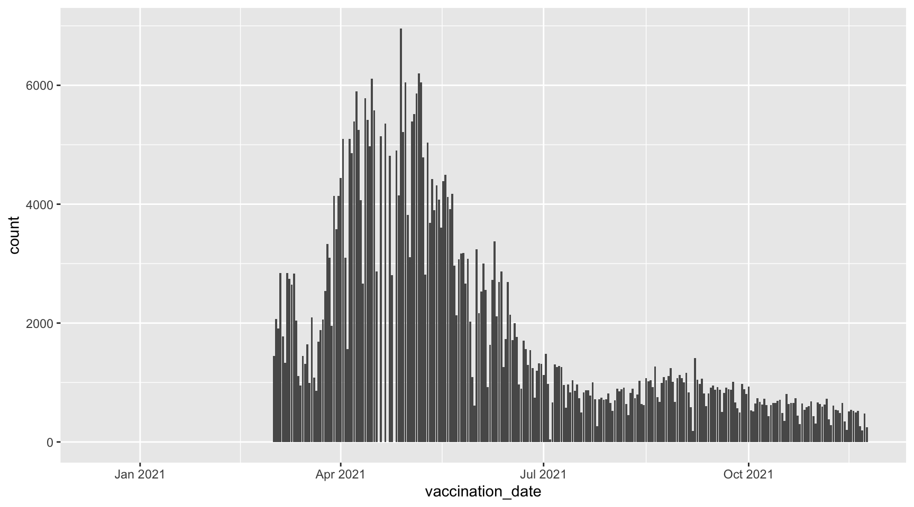
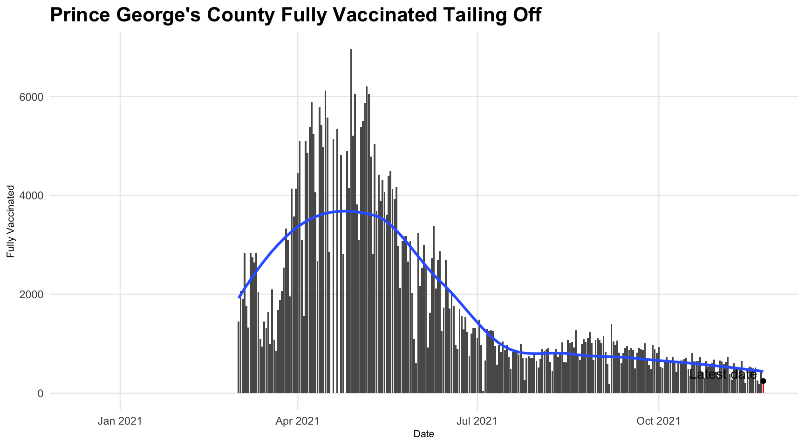
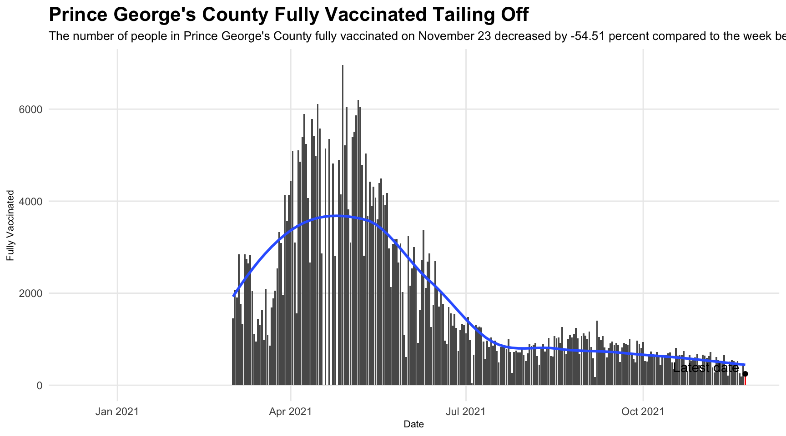

Chapter 22 Automating analysis
Many of the data analyses that you do will be largely one-off efforts – you’re going to do the analysis and write the story and be done. Maybe you’ll come back to it in a couple of months or years, but really you’re just doing it once.
But what happens when you have a long-running story, where you’re going to update it every day, or every week? What changes when you’re writing that code?
- How will this run again without changing anything?
- What questions do you have that have to be answered each time?
- What changes when you have to repeat questions to changing data?
The global COVID-19 pandemic is something we’re going to be writing about and covering for some time. One element of it is data on vaccinations. That’s reported frequently (mostly daily), and we’ll be talking about it for some time. So it is an ideal candidate for repeating analysis – scripting the questions we want to answer every week and doing so in a way that we can just load it without having to change anything.
Here’s a real-world example: you are covering public health in Maryland, focusing on Prince George’s County, and you want to see how many people are getting fully vaccinated over time. You could look at a county or state website, copy and paste some information into a file and then do some calculations, but there’s a better way. Instead, let’s build a system that goes out each day to retrieve the data, makes it easier to analyze and then calculates the percentage change in the number of people getting fully vaccinated between the latest date and a week earlier. And makes us a chart showing that.
Let’s get some other libraries to our typical tidyverse import. We’ll start with lubridate and janitor to help wrangle the data, and we’re also going to add a library called ggrepel, which assists in putting tables on dots in charts.
You install it the same way you do anything else – install.packages("ggrepel").
library(tidyverse)
library(janitor)
library(lubridate)
library(ggrepel)22.1 Automating downloads and imports
Now, where to find the data?
Maryland publishes data daily on vaccinations on the state Department of Heath website.
The dashboard is a series of HTML pages placed on the main page via iframe. Like this one: https://state-of-maryland.github.io/VaccineDashboardGraphs/VaccinationDosesDaily.html. But if you view the source on that URL, there’s … no data. It’s being pulled in from another URL. If we want to automate getting this data, we’ll need to find out where it lives. One big clue is in the composition of that URL: “github.io.” Are these files (and maybe the data) already on GitHub? Let’s find out. The easiest thing to do is to go to the GitHub user: https://github.com/state-of-maryland. There’s a repository there called VaccineCSVs that sounds pretty good. Let’s check it out.
There are a lot of files here: https://github.com/state-of-maryland/VaccineCSVs, and we want to focus our attention on the ones that are frequently updated. There are a bunch of those, some of which end in .json and .csv.xml, but we want to focus on the ones that end in .csv. Let’s use this one: https://raw.githubusercontent.com/state-of-maryland/VaccineCSVs/master/MD_COVID19_TotalVaccinationsCountyFirstandSecondSingleDose.csv
We’ll read it into a dataframe like usual and clean up the column names:
county_vaccinations_by_date <- read_csv("https://raw.githubusercontent.com/state-of-maryland/VaccineCSVs/master/MD_COVID19_TotalVaccinationsCountyFirstandSecondSingleDose.csv") %>%
clean_names()##
## ── Column specification ────────────────────────────────────────────────────────
## cols(
## OBJECTID = col_double(),
## VACCINATION_DATE = col_character(),
## County = col_character(),
## FirstDoseDaily = col_double(),
## FirstDoseCumulative = col_double(),
## SecondDoseDaily = col_double(),
## SecondDoseCumulative = col_double(),
## SingleDoseDaily = col_double(),
## SingleDoseCumulative = col_double(),
## AtLeastOneDose = col_double(),
## FullyVaccinated = col_double(),
## FullVaccinatedCumulative = col_double(),
## AtLeastOneDoseCumulative = col_double()
## )View(county_vaccinations_by_date)22.2 Exploring the data
Each row represents vaccination stats for a single county on a single day, including cumulative figures. But when we read in that data, the vaccination_date column is formatted as a mdy_hms function, which matches the format in the dataframe. Then we’ll save vaccination_date as a date without the time:
county_vaccinations_by_date <- county_vaccinations_by_date %>%
mutate(vaccination_date = date(mdy_hms(vaccination_date)))Let’s see if there’s anything unusual in the data by counting the number of rows for each county:
county_totals <- county_vaccinations_by_date %>%
group_by(county) %>%
summarize(total = n())
View(county_totals)There are totals for all of Maryland’s jurisdictions, plus one for “Unknown” and one that’s NA. All but the last one have roughly the same number of records. What’s going on with the NA records?
county_vaccinations_by_date %>%
filter(is.na(county))## # A tibble: 208 x 13
## objectid vaccination_date county first_dose_daily first_dose_cumulative
## <dbl> <date> <chr> <dbl> <dbl>
## 1 1 2021-01-08 <NA> 8000 8000
## 2 2 2021-01-13 <NA> 1 8001
## 3 3 2021-01-26 <NA> 1 8002
## 4 4 2021-02-06 <NA> 1 8003
## 5 5 2021-02-10 <NA> NA 8003
## 6 6 2021-02-11 <NA> 1 8004
## 7 7 2021-02-13 <NA> 1 8005
## 8 8 2021-02-23 <NA> 1 8006
## 9 9 2021-03-06 <NA> NA 8006
## 10 10 2021-03-08 <NA> 1 8007
## # … with 198 more rows, and 8 more variables: second_dose_daily <dbl>,
## # second_dose_cumulative <dbl>, single_dose_daily <dbl>,
## # single_dose_cumulative <dbl>, at_least_one_dose <dbl>,
## # fully_vaccinated <dbl>, full_vaccinated_cumulative <dbl>,
## # at_least_one_dose_cumulative <dbl>They don’t seem to pertain to any county (or no county), and it’s not clear what these records represent. Let’s remove them from our dataset:
county_vaccinations_by_date <- county_vaccinations_by_date %>%
filter(!is.na(county))Now we can start to interview this data.
Let’s look at the most recent date, and that’s something that takes on different meaning when we’re talking about updating data. We need to make this generic so that every time we pull this up and run it, it’s the most recent date at the top. This time, it’s very simple:
county_vaccinations_by_date %>% arrange(desc(vaccination_date))## # A tibble: 8,555 x 13
## objectid vaccination_date county first_dose_daily first_dose_cumulati…
## <dbl> <date> <chr> <dbl> <dbl>
## 1 892 2021-11-23 Baltimore 471 523442
## 2 1256 2021-11-23 Anne Arundel 235 377615
## 3 1544 2021-11-23 Baltimore Ci… 232 353969
## 4 1833 2021-11-23 Allegany 13 32895
## 5 2459 2021-11-23 Cecil 31 49289
## 6 2737 2021-11-23 Carroll 85 108660
## 7 3028 2021-11-23 Calvert 32 58787
## 8 3221 2021-11-23 Charles 47 96284
## 9 3704 2021-11-23 Harford 98 152295
## 10 4069 2021-11-23 Caroline 4 15100
## # … with 8,545 more rows, and 8 more variables: second_dose_daily <dbl>,
## # second_dose_cumulative <dbl>, single_dose_daily <dbl>,
## # single_dose_cumulative <dbl>, at_least_one_dose <dbl>,
## # fully_vaccinated <dbl>, full_vaccinated_cumulative <dbl>,
## # at_least_one_dose_cumulative <dbl>22.3 Analysis
Now is when we need to start asking ourselves – what are the questions that are going to come up day after day? What about how this most current date compares to the previous day, or the previous week or month?
What if we just ranked them? Where does this date rank? For that, we’ll create a new column called Rank using mutate and we’ll use a function called min_rank to rank them. Let’s start by looking at daily fully_vaccinated figures in Prince George’s County. I’m going to save them to a dataframe called ranked:
ranked <- county_vaccinations_by_date %>%
filter(county == "Prince George's") %>%
mutate(rank = min_rank(desc(fully_vaccinated))) %>%
arrange(desc(vaccination_date)) %>%
select(county, vaccination_date, fully_vaccinated, rank)
View(ranked)The most recent dates aren’t among the highest-ranked, meaning that fewer people are getting fully vaccinated on a given day compared to previous dates.
Let’s think about this a little more. What else could we do with this? What are the recurring questions? How about the percent change between the latest date and one week ago? To do that, we need to find the latest date, which we’ve arranged to be the first one in our ranked dataframe. But what about a week ago? Luckily, if we have one date we can calculate another one by adding or subtracting days:
latest_date <- ranked %>% slice(1)
one_week_ago <- ranked %>% filter(vaccination_date == latest_date$vaccination_date - 7)
latest_date <- latest_date %>%
mutate(pct_change_week = (fully_vaccinated - one_week_ago$fully_vaccinated)/one_week_ago$fully_vaccinated *100)The one_week_ago$fully_vaccinated syntax is a way to reference a specific column in a specific dataframe. In this case, it’s a dataframe with exactly one row.
22.4 Making updating graphics
More than numbers, we are going to want to see this data so we can spot potential stories. We can build this in steps. First, let’s just make a big bar chart.
ggplot() +
geom_bar(data=ranked, aes(x=vaccination_date, weight=fully_vaccinated))
So that shows us that the trend is going down over time, which makes sense as fewer people in the county are unvaccinated. It also shows that just after vaccinations began there was an initial dip - supply problems? - before the figure leapt up in April and May.
Let’s build up some more layers to highlight trends and the most recent spot.
Now, in ggplot, we can add multiple layers.
The first layer will be all the bars.
The second layer will just be the latest, and we’ll make that bar red.
Then we’ll add a point to the top of that line to really draw attention to it.
Then we’ll use ggprepel to label it.
Then I’m going to add a smoothing line. That’ll illustrate the trend clearly.
The rest is labeling and adjusting the text to make it look more like a news graphic.
ggplot() +
geom_bar(data=ranked, aes(x=vaccination_date, weight=fully_vaccinated)) +
geom_bar(data=latest_date, aes(x=vaccination_date, weight=fully_vaccinated), fill="red") +
geom_point(data=latest_date, aes(x=vaccination_date, y=fully_vaccinated)) +
geom_text_repel(data=latest_date, aes(x=vaccination_date, y=fully_vaccinated + 150, label="Latest date")) +
geom_smooth(data=ranked, aes(x=vaccination_date, y=fully_vaccinated), method=loess, se=FALSE) +
labs(title="Prince George's County Fully Vaccinated Tailing Off", x="Date", y="Fully Vaccinated") +
theme_minimal() +
theme(
plot.title = element_text(size = 16, face = "bold"),
axis.title = element_text(size = 8),
plot.subtitle = element_text(size=10),
panel.grid.minor = element_blank()
)## `geom_smooth()` using formula 'y ~ x'## Warning: Removed 82 rows containing non-finite values (stat_smooth).
One thing we are missing? An automated summary. What if we programmatically wrote the description for this chart using the percent change calculation we did before?
First, we format the percent change to look more news graphic like and not with 7 significant digits.
changetext <- round(latest_date$pct_change_week[[1]], digits=2)
direction <- if_else(changetext > 0, "increased", "decreased")Now we’re going to use a function called paste to merge some text together. We’re going to paste together a sentence fragment, the percent change number and another sentence fragment together to form a sentence. We’ll save it as sub, because that’s what it’s called in ggplot – a subtitle.
sub <- paste("The number of people in Prince George's County fully vaccinated on ", format(latest_date$vaccination_date, format="%B %d"), " ", direction, " by ", changetext, " percent compared to the week before", sep="")Here’s our sentence:
sub## [1] "The number of people in Prince George's County fully vaccinated on November 23 decreased by -54.51 percent compared to the week before"Now we can add that to our labels.
ggplot() +
geom_bar(data=ranked, aes(x=vaccination_date, weight=fully_vaccinated)) +
geom_bar(data=latest_date, aes(x=vaccination_date, weight=fully_vaccinated), fill="red") +
geom_point(data=latest_date, aes(x=vaccination_date, y=fully_vaccinated)) +
geom_text_repel(data=latest_date, aes(x=vaccination_date, y=fully_vaccinated + 150, label="Latest date")) +
geom_smooth(data=ranked, aes(x=vaccination_date, y=fully_vaccinated), method=loess, se=FALSE) +
labs(title="Prince George's County Fully Vaccinated Tailing Off", subtitle=sub, x="Date", y="Fully Vaccinated") +
theme_minimal() +
theme(
plot.title = element_text(size = 16, face = "bold"),
axis.title = element_text(size = 8),
plot.subtitle = element_text(size=10),
panel.grid.minor = element_blank()
)## `geom_smooth()` using formula 'y ~ x'## Warning: Removed 82 rows containing non-finite values (stat_smooth).
This is going to be a story for months, if not years. So repeating this analysis is a must for a reporter covering health care in Maryland. We’ve set ourselves up to do this every week when the data comes out. We just open our notebook, go to Run > Restart R and Run All Chunks and sit back and watch as it does it all again.
Then we go report.